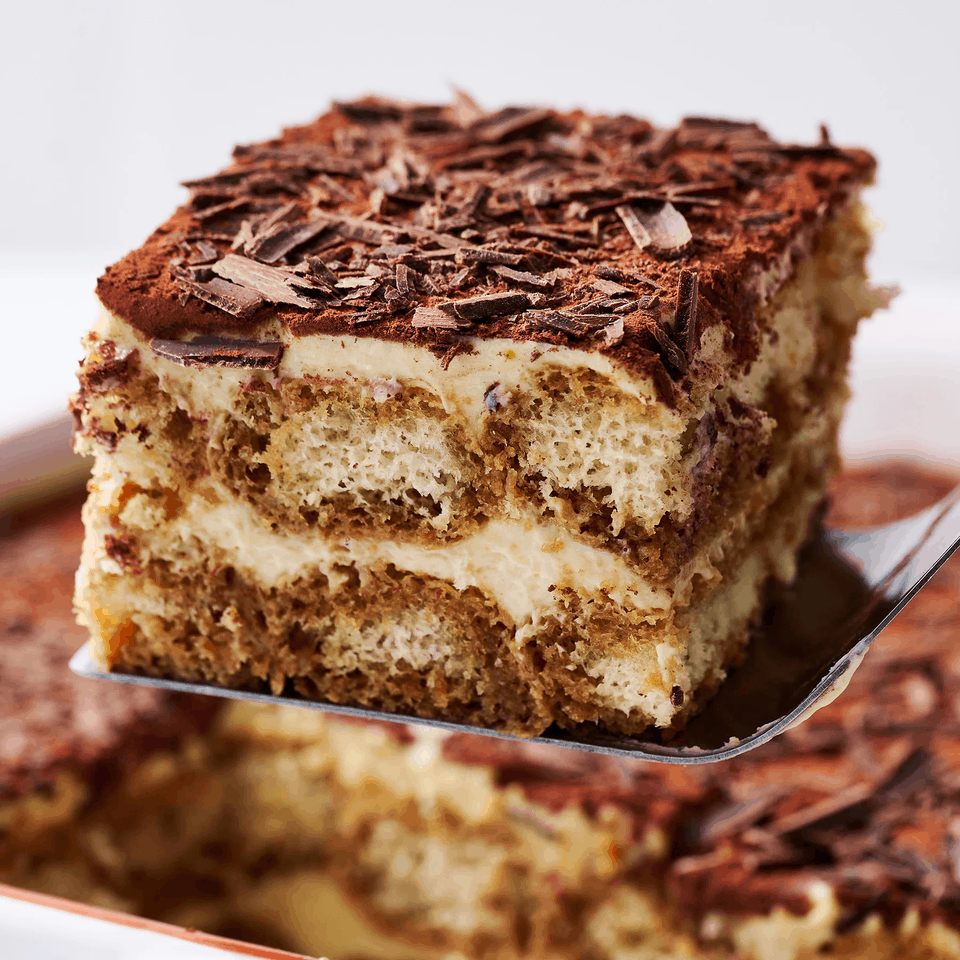
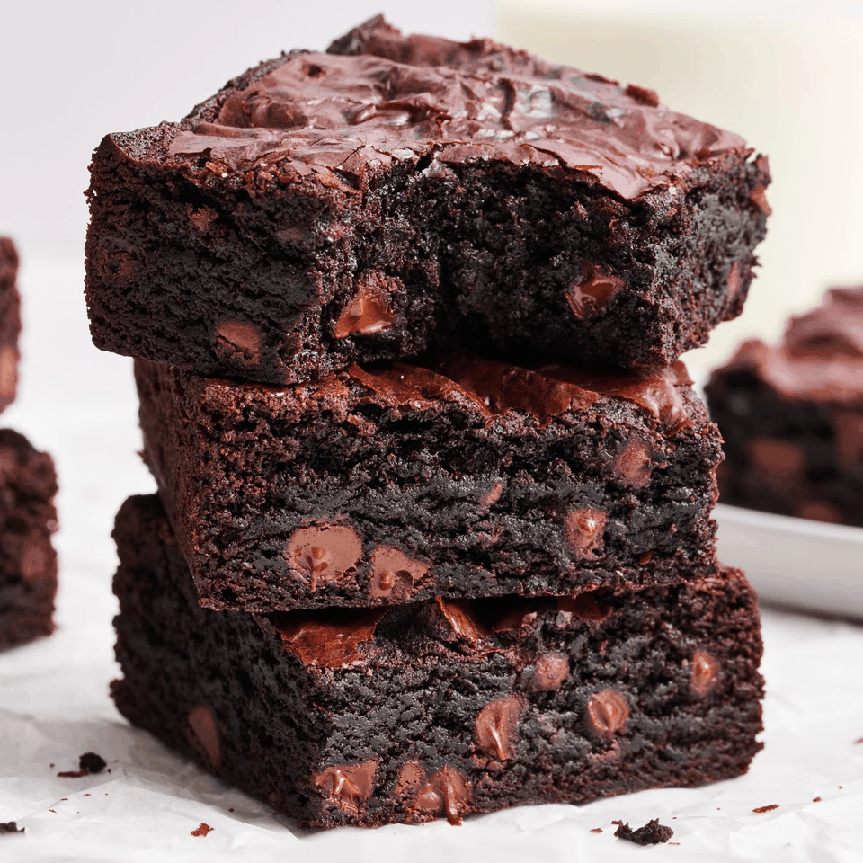
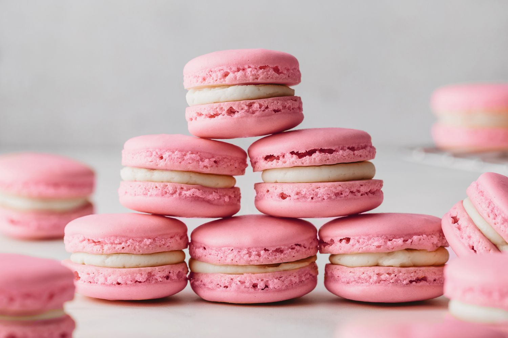
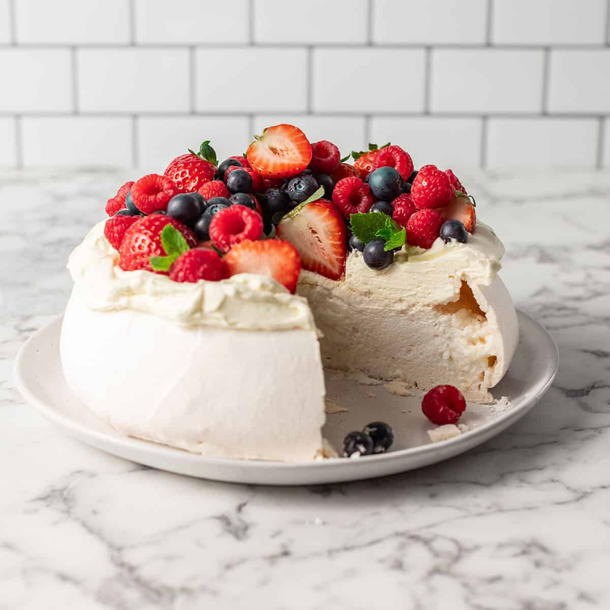
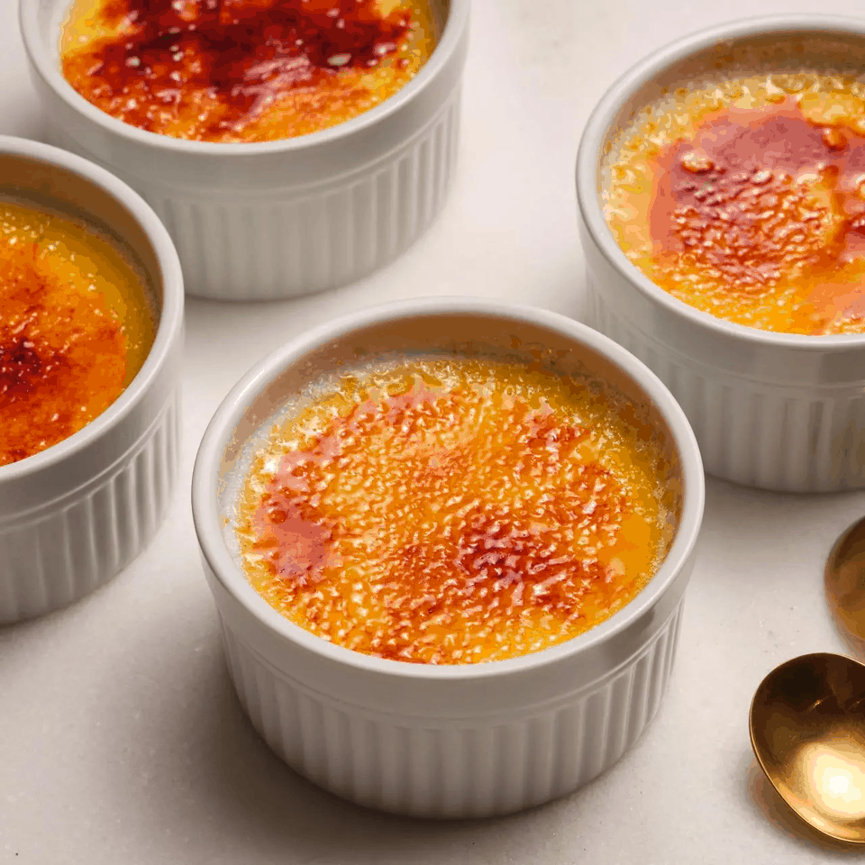
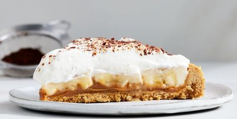
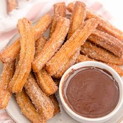
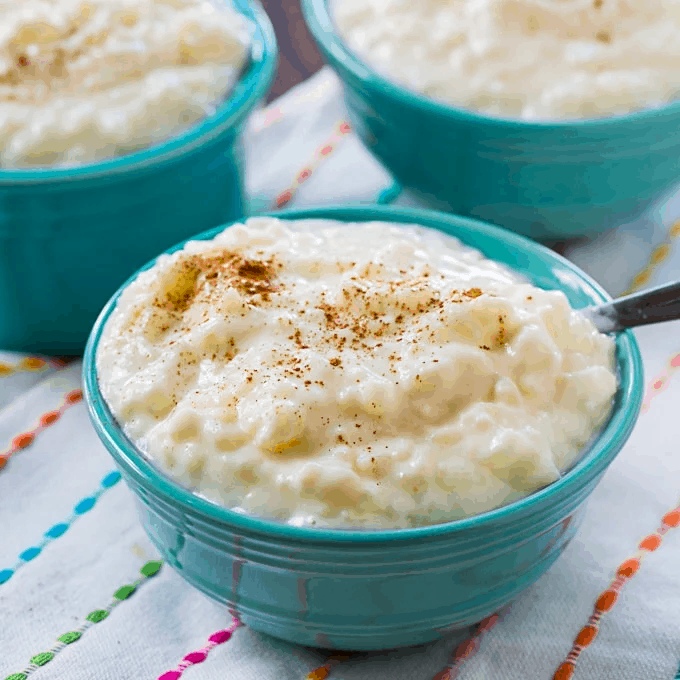

Chocolate Cake

Ingredients:
- 1 3/4 cups flour
- 1 1/2 cups sugar
- 3/4 cup cocoa powder
- 1 1/2 tsp baking powder
- 1 1/2 tsp baking soda
- 1 tsp salt
- 2 large eggs
- 1 cup milk
- 1/2 cup vegetable oil
- 2 tsp vanilla extract
- 1 cup boiling water
Tutorial:
Preheat the oven to 350°F (175°C). Mix dry ingredients, then add wet ingredients. Pour into pans and bake for 30-35 minutes.
Tips:
Use high-quality cocoa powder for a richer flavor.
Ice Cream

Ingredients:
- 2 cups heavy cream
- 1 cup milk
- 3/4 cup sugar
- 1 tsp vanilla extract
Tutorial:
Whisk all ingredients together, then churn in an ice cream maker until thick.
Tips:
For a creamier texture, chill the mixture overnight before churning.
Fruit Tart

Ingredients:
- 1 pie crust
- 1 cup pastry cream
- Assorted fruits (kiwi, strawberries, blueberries)
Tutorial:
Bake the pie crust, fill with pastry cream, and arrange fruits on top.
Tips:
Use seasonal fruits for the best flavor.
Cheesecake

Ingredients:
- 1 1/2 cups graham cracker crumbs
- 1/2 cup sugar
- 1/2 cup butter
- 3 (8 oz) packages cream cheese
- 1 cup sugar
- 3 eggs
- 1 tsp vanilla extract
Tutorial:
Mix crust ingredients and press into a pan. Blend cheesecake filling ingredients and pour over crust. Bake.
Tips:
Chill overnight for the best texture.
Tiramisu

Ingredients:
- 6 egg yolks
- 3/4 cup sugar
- 2/3 cup milk
- 1 1/4 cups heavy cream
- 1 cup strong coffee
- Ladyfinger cookies
- Cocoa powder for dusting
Tutorial:
Whisk egg yolks and sugar, add milk. Fold in whipped cream. Layer with coffee-soaked ladyfingers.
Tips:
Let it set in the fridge for at least 4 hours before serving.
Brownies

Ingredients:
- 1/2 cup butter
- 1 cup sugar
- 2 eggs
- 1 tsp vanilla extract
- 1/3 cup cocoa powder
- 1/2 cup flour
- 1/4 tsp salt
- 1/4 tsp baking powder
Tutorial:
Melt butter, mix with sugar and eggs. Stir in dry ingredients. Bake for 20-25 minutes.
Tips:
For extra fudginess, don’t overbake.
Macarons

Ingredients:
- 1 cup powdered sugar
- 1/2 cup almond flour
- 2 large egg whites
- 1/4 cup granulated sugar
- Food coloring (optional)
Tutorial:
Mix dry ingredients. Whip egg whites and gradually add sugar. Fold in dry mix and pipe onto trays. Bake.
Tips:
Let them rest before baking to achieve a smooth shell.
Pavlova

Ingredients:
- 4 egg whites
- 1 cup sugar
- 1 tsp vanilla extract
- 1 tsp vinegar
- 1 cup heavy cream
- Assorted fruits (kiwi, strawberries)
Tutorial:
Whip egg whites until stiff peaks form, gradually add sugar. Bake until crisp outside, soft inside. Top with cream and fruits.
Tips:
Serve immediately to keep the meringue crisp.
Crème Brûlée

Ingredients:
- 2 cups heavy cream
- 1/2 cup sugar
- 5 egg yolks
- 1 tsp vanilla extract
- Additional sugar for topping
Tutorial:
Heat cream and sugar. Whisk yolks, then mix with cream. Bake in a water bath and chill. Caramelize sugar on top before serving.
Tips:
Use a kitchen torch for the best caramelized crust.
Banoffee Pie

Ingredients:
- 1 pie crust
- 1 can of dulce de leche
- 2 ripe bananas
- 1 cup heavy cream
- Chocolate shavings for topping
Tutorial:
Spread dulce de leche over the crust, slice bananas on top, and whip cream to spread over everything. Garnish with chocolate.
Tips:
Serve immediately to prevent the bananas from browning.
Churros

Ingredients:
- 1 cup water
- 1/2 cup butter
- 1 cup flour
- 2 eggs
- 1/4 cup sugar
- 1 tsp cinnamon
Tutorial:
In a large bowl, mix sour cream and whipped cream until smooth.
Fold in marshmallows, pineapple, oranges, coconut, cherries, and nuts.
Chill for at least 1 hour before serving. Enjoy!
Tips:
Prepare a day in advance for better flavor
Rice Pudding

Ingredients:
- 1 cup rice
- 4 cups milk
- 1/2 cup sugar
- 1 tsp vanilla extract
- Cinnamon for topping
Tutorial:
Cook rice in milk until soft, stir in sugar and vanilla. Chill and serve with a sprinkle of cinnamon.
Tips:
Use short-grain rice for a creamier texture.